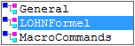
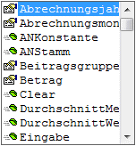

Die Formel selbst wird im Formelfenster bearbeitet. Grundsätzlich gibt es Einiges zu beachten:
Beschreibungstexte
Texte, die grün dargestellt werden, und die mit einem einfachen Hochkomma (') beginnen, sind Beschreibungstexte und haben keinen Einfluss auf die Funktion der Formel.
Beispiel:
'(Declarations)
'Formel: Gehalt
'Beschreibung: Gehalt
Beginn und Ende
Der Ablauf der Formel wird zwischen den beiden Einträgen "Function Formel ()" und "End Function" definiert. Alles was nicht innerhalb dieser beiden Einträge definiert ist, wird bei der Formelabarbeitung nicht berücksichtigt.
Function Formel ()
'Ihre Formel kommt hierher
Betrag = ANKonstante( 1 )
EingabeBetrag "Geben Sie den Betrag ein"
Zwischenspeicher ( 2 ) = ANKonstante( 1 )
Formel = 1 'successful
End Function
Funktionen
Durch Funktionen werden vordefinierte Programmabläufe abgerufen, die z.B. eine Variable füllen oder dergleichen.
Funktionen werden auf der einen Seite von der VB-Script-Engine, auf der anderen Seite von der WinLine zur Verfügung gestellt.
Funktionen, die von VB-Script stammen, werden in der Formel blau dargestellt.
Um eine Liste aller Funktionen der WinLine im Formelfenster angezeigt zu bekommen, muss nur ein . eingetragen werden.
Dadurch wird das Feld

angezeigt. Wird dieses angewählt, dann wird das Wort "LOHNFormel" in das Fenster übernommen. Wenn danach nochmals ein . eingegeben wird, wird eine Listbox mit allen Funktionen angezeigt - es kann die gewünschte Funktion ausgewählt werden.

Wenn man sich durch Drücken der Pfeil-nach-Unten-Taste durch die einzelnen Einträge der Listbox bewegt, wird die Verwendung der aktuellen Funktion in einem eigenen Fenster " " angezeigt. Dadurch lässt sich erkennen, ob man die Funktion mit Parametern aufrufen muss oder nicht.
Wenn vor dem Eintrag in der Listbox das Symbol angezeigt wird, handelt es sich um eine Funktion.
Beispiel für eine Funktion:
EingabeStunden: Diese Funktion kümmert sich darum, dass bei der Formelabarbeitung ein Feld geöffnet wird, in dem die Anzahl der Stunden eingegeben werden kann. Als Ergebnis davon wird die Variable "Stunden" gefüllt.
Wenn vor dem Eintrag in der Listbox das Symbol  angezeigt wird, handelt es sich um eine
Variable.
angezeigt wird, handelt es sich um eine
Variable.
Beispiel für eine Variable:
Betrag: Das ist das Ergebnis, das am Ende der Formel berechnet werden soll und das in die Erfassungstabelle übernommen wird.
Das Fenster
Bei einigen Formeln ist es notwendig, dass zur Berechnung eines Bezuges zuerst ein Wert eingegeben werden muss (z.B. zur Ermittlung der Überstundenberechnung muss zuerst die Anzahl der Überstunden eingegeben werden).
Diese Eingabe erfolgt in dem eigens dafür vorgesehenen Fenster "Lohnformel". Damit das Fenster erscheint, muss in der Formel zumindest eine Funktion "Eingabe(Variable)" (Variable steht für Stunden, Satz, Betrag, Faktor1 bis 3, Kostenstelle, Kostenart oder Kostenträger) vorhanden sein.
Schließen des Formelfensters
Das Formelfenster wird durch Drücken der Tastenkombination ALT + F4 oder durch Anklicken des X im Fenster rechts oben geschlossen.
Achtung:
In jedem anderen Fenster wird durch Drücken der Tastenkombination ALT + F4 das komplette Programm geschlossen.
Mit dem Schließen des Fensters wird für die Formel gleich ein Syntaxcheck (Prüfung) durchgeführt. Sollte die Formel einen syntaktischen Fehler aufweisen, wird dieser in einem eigenen Fenster angezeigt, und die Formel kann so lange nicht gespeichert werden, bis der Fehler behoben wurde.
Beispiel für einen syntaktischen Fehler:
Betrag =
Die Variable "Betrag" soll beschickt werden, es wurde aber nicht angeführt, mit welchen Werten dies gemacht werden soll.
Achtung:
Wenn bei der Erstellung einer Formel ein Schreibfehler gemacht wurde, so kann dieser nicht vom Programm durch den Syntaxcheck erkannt werden.
Beispiel:
Betrag = ANKonstante(1)
ANKonstante(1) wurde zwar falsch geschrieben, für das Programm stellt das aber keinen syntaktischen Fehler dar und es kann daher nicht darauf hingewiesen werden. Das die Formel "falsch" ist, wird erst bei der Abarbeitung sichtbar, wenn nämlich der Betrag nicht gefüllt wird, obwohl in der ANKonstante ein Wert hinterlegt ist.
Wurde eine Formel neu erstellt, wird die Formel mit dem Schließen des Fensters gespeichert.
Wurden Änderungen in der Formel vorgenommen, so fragt das Programm beim Schließen des Fensters, ob die durchgeführten Änderungen gespeichert werden sollen oder nicht.